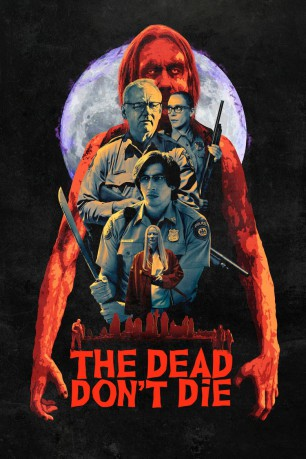
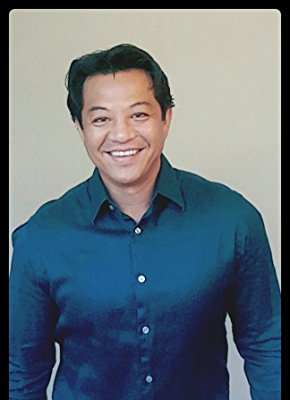

#11761 The Dead Don't Die
 
 IMDB-Wertung: 5.6 / 10
IMDB-Wertung: 5.6 / 10  Tomatometer: 54
Tomatometer: 54  Metascore: 54
Metascore: 54 
Eine Verschiebung der Erdachse löst eine Abfolge seltsamer Geschehnisse in der beschaulichen Kleinstadt Centerville aus. Während Sherriff Cliff Robertson (Bill Murray) noch rätselt, ist sich sein Kollege Ronald Peterson (Adam Driver) sicher: Es muss sich um eine Epidemie von Zombies handeln.
Jahr: 2019
Dauer: 104 Minuten
FSK: 16
Land: USA Studio: Focus FeaturesTonspuren: DD5.1 - ,
Untertitel: Deutsch,
Auflösung: 1080p (1920x1080) Größe: 8120 MB
Genre: Horror, Komödie, Fantasy
Regisseur:  Jim Jarmusch
Jim Jarmusch
Drehbuch: Jim Jarmusch
Soundtrack:
Darsteller:
 Bill Murray als Chief Cliff Robertson
Bill Murray als Chief Cliff Robertson Adam Driver als Officer Ronnie Peterson
Adam Driver als Officer Ronnie Peterson Tom Waits als Hermit Bob
Tom Waits als Hermit Bob Chloë Sevigny als Officer Mindy Morrison
Chloë Sevigny als Officer Mindy Morrison Steve Buscemi als Farmer Frank Miller
Steve Buscemi als Farmer Frank Miller- Eszter Balint als Fern
 Danny Glover als Hank Thompson
Danny Glover als Hank Thompson- Maya Delmont als Stella
- Taliyah Whitaker als Olivia
- Jahi Di'Allo Winston als Geronimo
- Kevin McCormick als Guard One
- Sid O'Connell als Guard Two
 Caleb Landry Jones als Bobby Wiggins
Caleb Landry Jones als Bobby Wiggins RZA als Dean
RZA als Dean Larry Fessenden als Danny Perkins
Larry Fessenden als Danny Perkins Rosie Perez als Posie Juarez
Rosie Perez als Posie Juarez Jodie Markell als Woman on TV
Jodie Markell als Woman on TV Carol Kane als Mallory O'Brien
Carol Kane als Mallory O'Brien- Rosal Colon als Lily
 Tilda Swinton als Zelda Winston
Tilda Swinton als Zelda Winston- Sara Driver als Female Coffee Zombie
 Iggy Pop als Male Coffee Zombie
Iggy Pop als Male Coffee Zombie Selena Gomez als Zoe
Selena Gomez als Zoe- Austin Butler als Jack
- Luka Sabbat als Zack
- Sturgill Simpson als Guitar Zombie
- Charlotte Kemp Muhl als Fashion Zombie
- Alyssa Maria App als Kid Zombie (uncredited)
- Monica Ayres als Cable Zombie (uncredited)
- Justin Clarke als Cemetery Zombie (uncredited)
- Austin Ferris als Zombie (uncredited)
- Lexa Hayes als Zombie (uncredited)
- David Hilfstein als Hardware Zombie / Golf Zombie (uncredited)
- Jonah Marshall als Zombie Child (uncredited)
- Julia Morrison als Tennis Girl Zombie (uncredited)
- Oliver Patnode als Cemetery Zombie Kid (uncredited)
 Wayne Pyle als Hardware Zombie (uncredited)
Wayne Pyle als Hardware Zombie (uncredited)- Willoughby Pyle als Super Hero Zombie Kid (uncredited)
- Thomas Racek als Zelda Zombie (uncredited)
- Jerry Schroader als Hardware Zombie (uncredited)
- Jude Selenis als Monster Mask Kid (uncredited)
- Dorothea Swiac als Cable Zombie (uncredited)
- Vinnie Velez als Cable Zombie (uncredited)
- Sophia Menja Weinman als Child Grave Zombie (uncredited)
- Willis Williams als Police Station Zombie / Hardware Zombie (uncredited)
- Norman Aaronson als Elderly Diner Patron (uncredited)
- Carl Arcilesi als Zombie (uncredited)
-  Lorenzo Beronilla als Zelda Zombie (uncredited)
- Mick Coleman als Zombie (uncredited)
- Vin Craig als Diner Patron (uncredited)
Datei: X:\2019(A-F)\Dead Don't Die, The (2019, FSK16, 1920x1080).mkv seit 20.09.2019
Festplatte: HD 2018(G-Z)-2019(A-Z)
 Es gibt insgesamt 60 Filme in der Gruppe '2019(A-F)'
Es gibt insgesamt 60 Filme in der Gruppe '2019(A-F)'